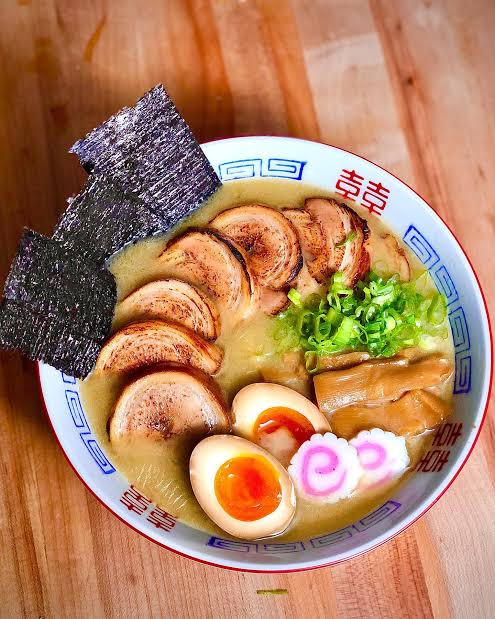

THE KITCHEN SOUNDTRACK
Enjoy a little ramen-shop atmosphere while you browse:

ラーメン · 一杯の情熱
ONE PUNCH.
ONE BOWL.
Fuel Your Hunger, the Hero Way.
Discover bold flavors and legendary ramen made for every hungry hero.
FROM OUR KITCHEN
Watch a ramen preparation video:
A TASTE WORTH FIGHTING FOR
From rich broth to satisfying noodles, every bowl brings a powerful taste of Japan.

OUR ROOTS
Our story began with a shared love of ramen, homemade noodles, and bringing people together over a comforting meal, and as friends, we turned that passion into a shop serving bowls with care, guided by the idea that every bowl should have rich broth, fresh noodles, bold flavors, and thoughtful preparation so each guest feels welcome and leaves satisfied.
YOUR NEXT ADVENTURE STARTS HERE
One bowl, the heart of a hero.
Visit or contact us to plan your ramen adventure.
VISIT OR CONTACT US
Call us at 09678760967.
Open Monday–Saturday, 9am–5pm.